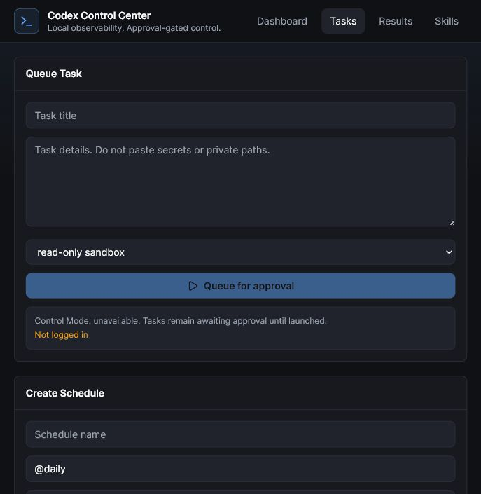
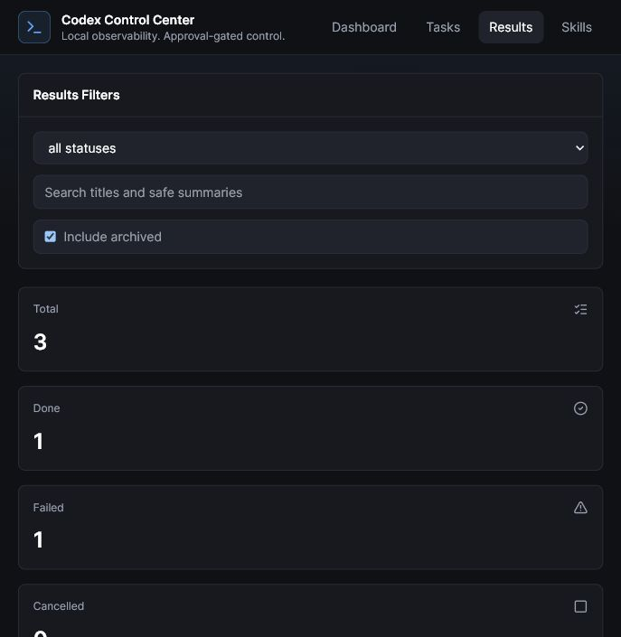

tutorial draft
safe first workflow
Install, observe, queue safely
Run Codex Control Center and use read-only tasks before anything edits files.
Install, observe, queue safely
step 1
Clone the public repo
Start from the published source package and keep the demo clean.
PowerShell
git clone https://github.com/jqaisystems/codex-control-center.git
cd codex-control-center
Clone the public repo
step 2
Run the Windows launcher
The app starts locally on 127.0.0.1 and prepares the backend and UI.
PowerShell
.\start-control-center.ps1
Backend starts on 127.0.0.1:8765
Browser opens automatically
Runs locally on 127.0.0.1:8765
safety model
Observe Mode and Control Mode
Observation reads local metadata. Control uses local Codex CLI only after approval.
No API key required for local observation
No Codex auth files are read
No raw prompts or outputs by default
Approved tasks launch through Codex CLI
Observe Mode does not call OpenAI
dashboard
Read the overview first
Use mode, usage, readiness, and weekly session grouping to understand local activity.

Dashboard: health, usage, readiness, sessions
tasks
Choose one workspace, then start read-only
Pick a Safe Starter Task, queue it, and approve only after reviewing the sandbox.

Read-only first. Approval required.
review
Review results and publish readiness
Results are safe summaries. Publish Readiness checks before sharing and does not publish anything.

Safe summaries, not raw logs
safe checklist
Observe locally. Start read-only. Share after checks.
Codex Control Center keeps V1 simple: metadata-only observation and approval-gated control.
github.com/jqaisystems/codex-control-center
Local-first. Metadata-only. Approval-gated.